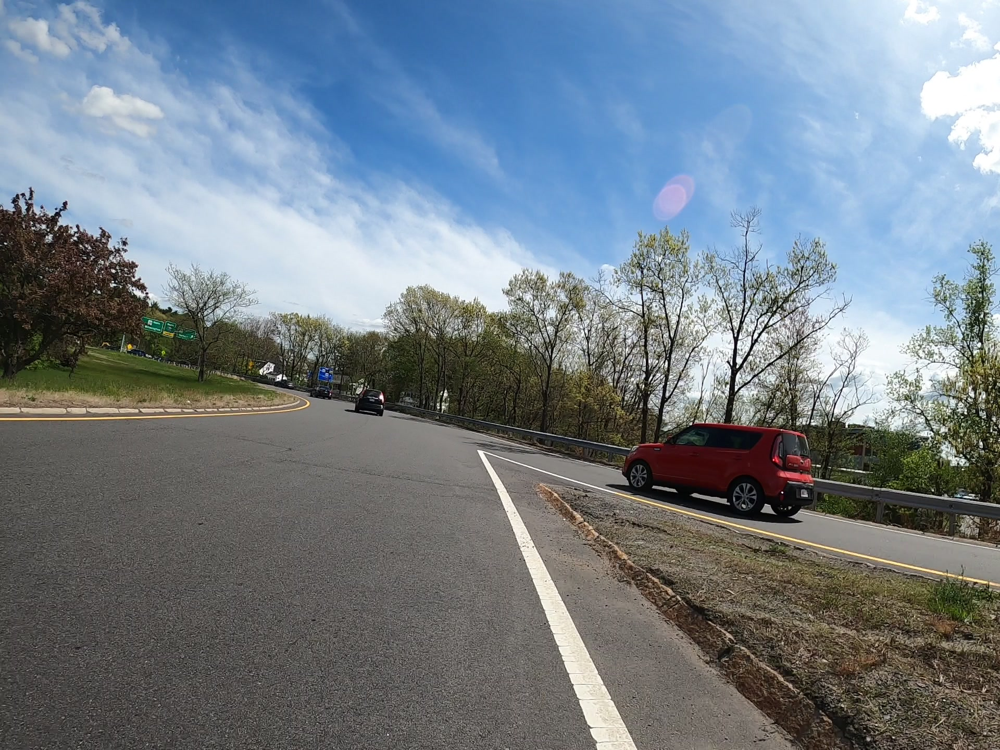
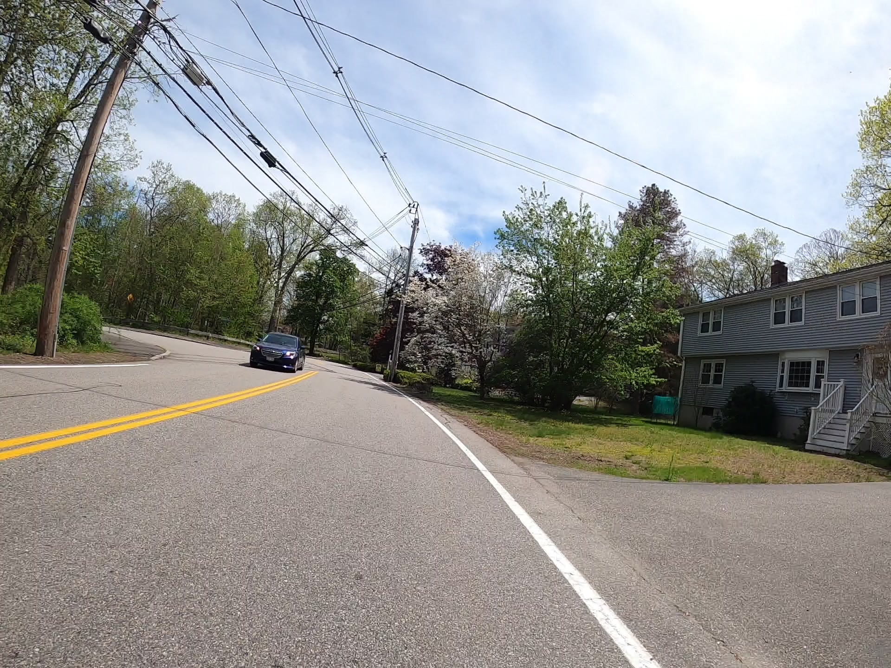
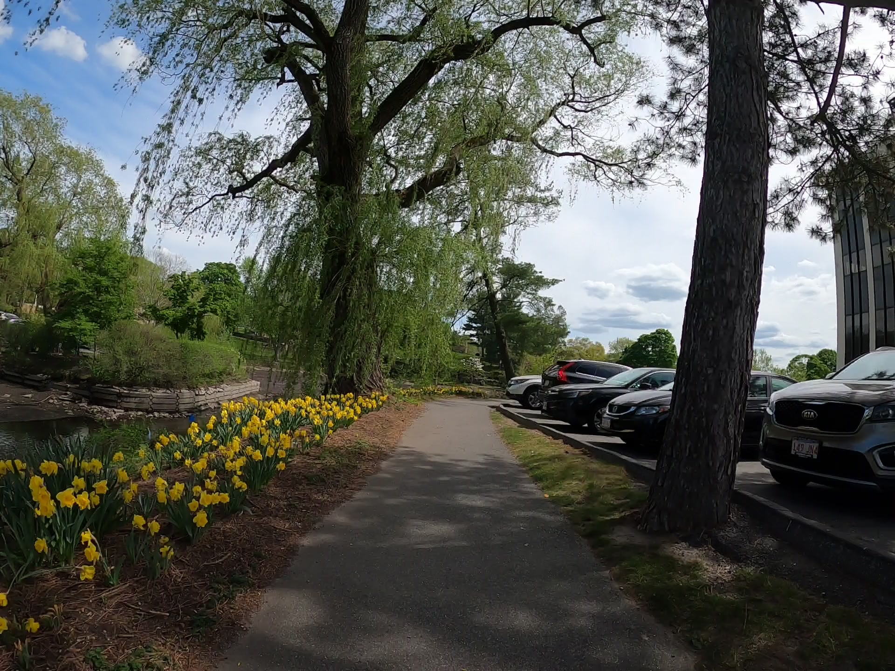

Blisterin' Bill'ricka!
Riding through some northern suburbs
This was a very short ride, about 18 miles (30 km) starting from North Billerica station, and ending at the Black Horse Tavern in Winchester center. Apart from being a blisteringly hot day - the first near 90° F (32° C) day since winter, it was a generally pleasant ride. The suburban towns of Billerica, Wilmington, Woburn, Burlington, Winchester, and Tewksbury had easy to ride on interconnected side streets - something I value a lot about living in Boston.
However, the 88° F temperature, along with relatively high humidity and low wind speed made for less than wonderful ride. Thankfully, being close to civilization, I was able to refill water at a restaurant. My phone, however shut down twice because it overheated. After asking a few people for advice on how to handle overheating phones, I’ve come to the unfortunate and expensive conclusion of investing in a bike computer - something like a Garmin. I hope to find a cheap second-hand one.
Overall, I covered 6 new towns - Wilmington, Billerica, Burlington, Woburn, Winchester, and Tewksbury - bringing the total to 138/351, and closer than ever to covering the northern suburbs - now only to wait for the Newburyport/Rockport line to resume services!
A timelapse video of the route can be viewed on YouTube here

The end of the route into Winchester Center was along a nice greenway along Judkin’s Pond, and Mill Pond. There was one bad intersection in Woburn along a rotary intersecting the I-95 in Woburn.
 Woburn Rotary
 Residential Street in Billerica
 Judkin’s Pond Greenway